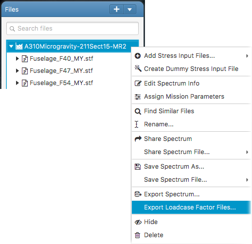

This opens the export loadcase factors files panel. Drag & drop the loadcase factors files in the designated area. In the panel, basic loadcase factor attributes such as pilot point name, spectrum name and etc. can be edited. This will export the loadcase factors files with the information into a zip archive. The archive can then be sent to the database administrator for uploading into AFM database.